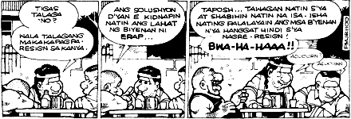
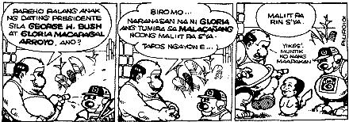

|
Viewpoint
Erap's
Legacy to the Filipino People
by
Joie B. Alvarez
Edsa
II Laughs
"Letter
of Recommendation"
Joseph
Estrada, the current President, can always be found hard at
work with his cabinet.Erap works intelligently, without wasting
the country's resources with cronies.He never thinks twice
about assisting fellow countrymen, and he decides firmly on
political matters.Erap has absolutely no vanity in spite of
his high accomplishments and profound knowledge in his field.
I firmly believe that Erap can be classified as a high-caliber
President, the type that cannot be dispensed with.Consequently,
I duly recommend that Erap be given an extended term, and
a proposal should be executed as soon as possible.
Seriously,
The Filipino Majority
------------------------------------------------
Duh?!!.... try reading only the odd lines (1,3,5,7,9,11)


Classic
Eraptions :
Q:
How can you tell if Erap has been using your computer?
A: There is liquid paper all over the monitor.
Q:
Why did Erap get fired from his job at the M & M's factory?
A: He kept throwing out the Ws.
Q:
How can you tell when Erap sends you a fax?
A: It has a stamp on it.
Q:
How do you confuse Erap?
A: Stick him in a round room and tell him to sit in the corner.
Q:
Why was the Erap proud for finishing a puzzle in only six
months?
A: The box said "2 to 4 years!"
Erap
found a lamp. He rubbed it and out came a genie.
Genie: You have one wish. What is your wish?
Erap: Can you connect all the islands of the Philippines with
bridges so that travel will be easier?
Genie: Aba, ang hirap naman non... how about another one?
Erap: Ah, alam ko na... make me smart nalang. Genie: Ay...
never mind, I'll just do the bridges.
Tanong:
Ilan litres meron ang Coke 2000?
Erap: Apat!
Tanong: Ha????
Erap: LITRE C, LITRE O, LITRE K, LITRE E!!
Q:
Why did Erap instruct his maid to change his baby's diaper
only once a month? A: Because it says right on the package
that it's good for up to 20 pounds.
Erap
and Loi were on an African safari when a huge lion sprang
out of nowhere and dragged Loi with its jaws.
Loi: Shoot, shoot!
Erap: I can't. I've run out of film!
One
particular day many years ago, Erap's wife was having labor
pains. Erap panicked so he called their doctor.
Erap: Hello, doc. My wife is in labor!
Doc: Is she in a lot of pain?
Erap: Yes, doc!
Doc: Is this the first baby?
Erap: No, doc. This is Erap!
Back
to Erap's Legacy to the Filipino People
|